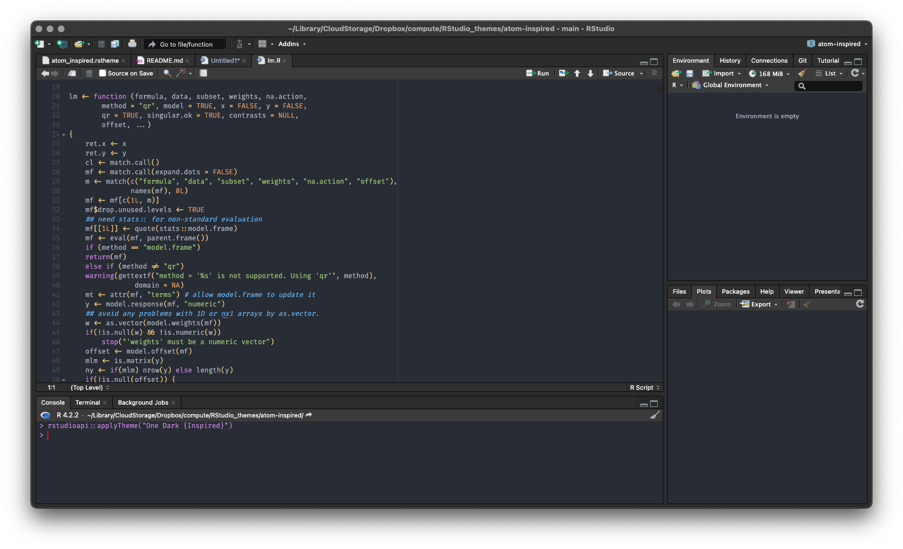
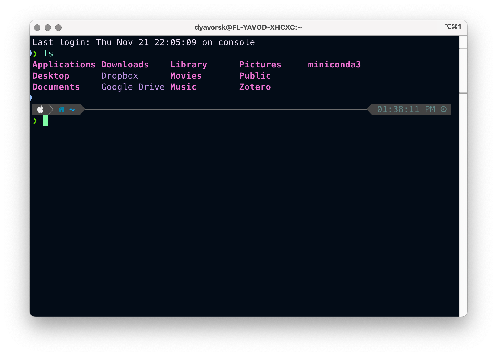
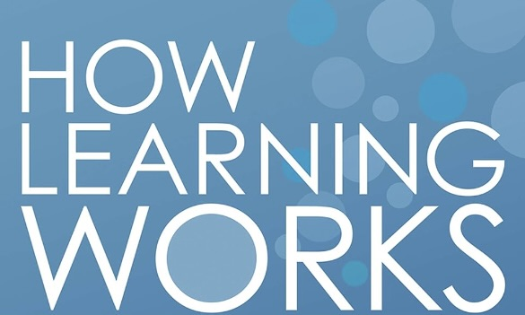
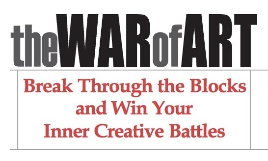
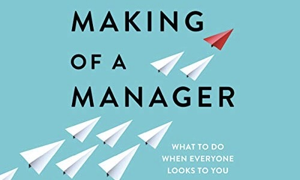
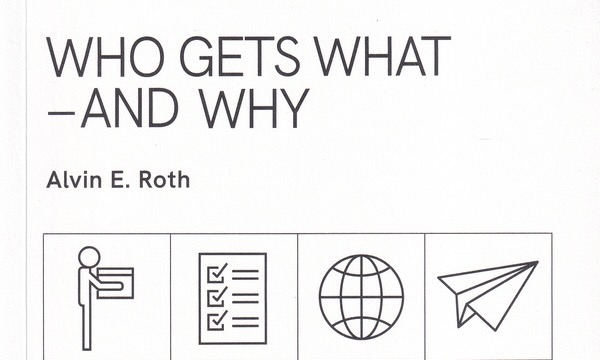

Dan Yavorsky
About
Resume
Teaching
Pubs
Posts
Links
R Programming
Computing
Stats
Advice
Blogs
Quotes
Content for You or Future Me
On this page
Posts
Discrete Choice
Book Notes
Solutions
Posts

My Computing Environment Preferences
How I Like Things on My Computers
Get Going with Git
Abbreviated Fundamentals of Version Control

Shell and Terminal on Mac
Abbreviated Fundamentals of the Command Line Interface
Build a Quarto Website
A tutorial to create a website skeleton with an About page, Resume page, and blog for hosting a project portfolio
Host Your Quarto Website on GitHub
A tutorial for pushing a local git repo to GitHub and deploying the website with GitHub pages
No matching items
Discrete Choice
Gumble Distribution in Discrete Choice Models
Derivation of Choice Probabilities
No matching items
Book Notes
Statistical Theory: A Concise Introduction (2ed)
by Felix Abramovich and Ya’acov Ritov
Good Habits, Bad Habits
Wendy Wood

How Learning Works
Susan Ambrose, et al.
Peak: The Secrets from the New Science of Expertise
Anders Ericsson and Robert Pool
Stolen Focus: Why You Can’t Pay Attention and How to Think Deeply Again
Johann Hari

Scott Pressfield Books
War of Art, Turning Pro, Do the Work, Nobody Wants to Read Your Sh*t

The Making of a Manager
Julie Zhou

Who Gets What and Why
Alvin Roth
No matching items
Solutions
Statistical Computing with R (2ed)
Maria Rizzo
No matching items